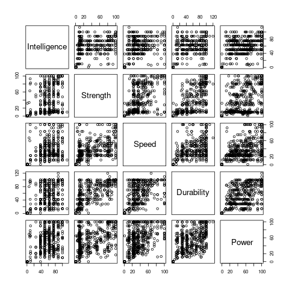

More Challenging Data Situations
Consider our now familiar data set of super hero powers.
library(tidyverse);
d <- read_csv("source_data/super_hero_powers.csv");This is not tidy. One "observation" in this case is:
hero, power-name, posseses
But our data set is instead:
hera, power-name1, power-name2, ...
(NB we could remove the posseses column and just leave out observations where it would be F).
To use dplyr and ggplot effectively (and to respect standards) we need to transform our data set.
Nice Names
Making the names nicer:
names(d) names(d) [1] "hero_names" "Agility" [3] "Accelerated Healing" "Lantern Power Ring" [5] "Dimensional Awareness" "Cold Resistance" [7] "Durability" "Stealth" [9] "Energy Absorption" "Flight" [11] "Danger Sense" "Underwater breathing" [13] "Marksmanship" "Weapons Master" [15] "Power Augmentation" "Animal Attributes" ...
These names are bad. They got spaces and other things in them and we want to be able to use $. Let's clean them up a bit.
Getting and Setting Names
library(stringr)
names(d) <- names(d) %>%
tolower() %>%
str_replace_all(" - ", " ") %>%
str_replace_all(" ","_");
names(d)
[1] "hero_names" "agility"
[3] "accelerated_healing" "lantern_power_ring"
[5] "dimensional_awareness" "cold_resistance"
[7] "durability" "stealth"
[9] "energy_absorption" "flight"
[11] "danger_sense" "underwater_breathing"
[13] "marksmanship" "weapons_master"
[15] "power_augmentation" "animal_attributes"Much better!
pivot_longer
A tidbit:
`%without%` <- function(strs, remove_these){
strs[!(strs %in% remove_these)];
}Now:
td <- pivot_longer(d, names(d) %without% c("hero_names"), names_to="power", values_to="has");
# A tibble: 111,389 x 3
hero_names power has
<chr> <chr> <lgl>
1 3-D Man agility TRUE
2 3-D Man accelerated_healing FALSE
3 3-D Man lantern_power_ring FALSE
4 3-D Man dimensional_awareness FALSE
5 3-D Man cold_resistance FALSE
6 3-D Man durability FALSE
7 3-D Man stealth FALSE
8 3-D Man energy_absorption FALSE
9 3-D Man flight FALSE
10 3-D Man danger_sense FALSEFactors, Rank and Order.
Let's try to make a plot of how common these powers are:
library(tidyverse); ## strictly superfluous
p <- ggplot(td %>% filter(has==TRUE), aes(power)) +
geom_histogram(stat="count");
ggsave("images/powers-histo1.png",plot=p);
This is almost useless.
Deseridata:
- Order by count
- Limit to top 20 or so?
- Make the Powers Readable.
Factor Variables
We often wish to make explicit the implicit fixed character of a set of discrete data values.
In our case our super powers are drawn from a fixed unordered set. They happen to be represented as strings but that doesn't really capture their true character.
A random string which happens to equal "healing factor" isn't really a "healing factor" entry in our dataset.
Factors make this explicit.
With GGPlot
We can use ordered Factors to make ggplot show things in a certain order:
power_counts <- td %>%
group_by(power) %>%
summarize(count=sum(has)) %>%
arrange(desc(count));
td$power <- factor(td$power, levels=power_counts$power);
p <- ggplot(td %>% filter(has==TRUE), aes(power)) +
geom_histogram(stat="count");
ggsave("images/powers-histo2.png",plot=p);
Still bad!
Top twenty:
tdtt <- td %>% filter(td$power %in% head(power_counts,20)$power);
p <- ggplot(tdtt %>% filter(has==TRUE), aes(power)) +
geom_histogram(stat="count");
ggsave("images/powers-histo3.png",plot=p);
Ok, now about those tick marks.
p <- ggplot(tdtt %>% filter(has==TRUE), aes(power)) +
geom_histogram(stat="count") +
theme(axis.text.x = element_text(angle = 90, hjust = 1));
ggsave("images/powers-histo4.png",plot=p);
Preliminary Abstractions
We should abstract our plot, so we can re-use it easily:
plot_counts <- function(d,title){
power_counts <- d %>% group_by(power) %>%
summarize(count=sum(has)) %>%
arrange(desc(count));
d$power <- factor(d$power,levels=power_counts$power);
d <- d %>% filter(power %in% head(power_counts,20)$power);
ggplot(d %>% filter(has==TRUE), aes(power)) +
geom_histogram(stat="count") +
theme(axis.text.x = element_text(angle = 90, hjust = 1)) +
labs(title=title);
}This is an example of abstraction: the steps to build a plot are the same we just filter the data differently.
Joining to Gender
An example of a join:
..
library(gridExtra);
gender_info <- read_csv("source_data/heroes_information.csv") %>%
select(name, Gender) %>% distinct() %>% rename(hero_names=name);
power_gender <- td %>% inner_join(gender_info, by="hero_names");
p_male <- plot_counts(power_gender %>% filter(Gender=="Male"),
title="Male");
p_female <- plot_counts(power_gender %>% filter(Gender=="Female"),
title="Female");
p <- grid.arrange(p_female, p_male,nrow=2);
ggsave("./images/hist_fm.png",plot=p);
How else might we visualize this data?
Rank Comparison Chart:

The Code
normalized_counts <- powers %>%
group_by(power, gender) %>%
summarize(n=sum(has)) %>%
inner_join(gender_counts,by="gender") %>%
mutate(p=n/total);
normalized_counts <- normalized_counts %>%
group_by(gender) %>% arrange(desc(p)) %>%
mutate(rank = seq(length(p))) %>%
ungroup();
small_set <- normalized_counts %>%
filter(gender %in% c("Male", "Female") & rank <= 20);
gender_to_position <- function(g){
c(Female=-2,Male=2)[g]
}
gender_to_line_position <- function(g){
c(Female=-1,Male=1)[g]
}
small_set$x_pos <- gender_to_position(small_set$gender);
small_set$line_x_pos <- gender_to_line_position(small_set$gender);
p <- ggplot(small_set, aes(x_pos,
rank)) +
scale_y_reverse() +
geom_tile(width=2.25,height=0.8,aes(fill=power)) +
geom_text(aes(label=power)) +
theme(legend.position="bottom") +
geom_line(aes(x=line_x_pos, color=power)) +
scale_x_continuous("Gender",c()) +
geom_text(data=tibble(x=c(-2,2),y=c(22,22),label=c("Female", "Male")),
aes(x=x,y=y,label=label));Taxonomy of Joins

Inner Join
Only data from both tables for which there is a match will appear in the result:
powers <- td %>% filter(has==TRUE); small_gender_info <- head(gender_info, 5); small_gender_info %>% inner_join(powers, by="hero_names"); # A tibble: 46 x 4 hero_names Gender power has <chr> <chr> <fct> <lgl> 1 A-Bomb Male accelerated_healing TRUE 2 A-Bomb Male durability TRUE 3 A-Bomb Male longevity TRUE 4 A-Bomb Male super_strength TRUE 5 A-Bomb Male stamina TRUE 6 A-Bomb Male camouflage TRUE 7 A-Bomb Male self-sustenance TRUE 8 Abe Sapien Male agility TRUE 9 Abe Sapien Male accelerated_healing TRUE 10 Abe Sapien Male cold_resistance TRUE # … with 36 more rows
Left Join
All rows from the left table occur, with NA filled for the right table columsn if they cannot be found.
small_gender_info %>% left_join(powers %>% head(10),by="hero_names")
Note that we've chopped off some of the powers to make clear the behavior of left_join:
# A tibble: 10 x 4 hero_names Gender power has <chr> <chr> <fct> <lgl> 1 A-Bomb Male accelerated_healing TRUE 2 A-Bomb Male durability TRUE 3 A-Bomb Male longevity TRUE 4 A-Bomb Male super_strength TRUE 5 A-Bomb Male stamina TRUE 6 A-Bomb Male camouflage TRUE 7 Abe Sapien Male NA NA 8 Abin Sur Male NA NA 9 Abomination Male NA NA 10 Abraxas Male NA NA
Right Join
Like left join, but for the right table:
> small_gender_info %>% right_join(powers %>% head(10),by="hero_names") small_gender_info %>% right_join(powers %>% head(10),by="hero_names") # A tibble: 10 x 4 hero_names Gender power has <chr> <chr> <fct> <lgl> 1 A-Bomb Male accelerated_healing TRUE 2 A-Bomb Male durability TRUE 3 A-Bomb Male longevity TRUE 4 A-Bomb Male super_strength TRUE 5 A-Bomb Male stamina TRUE 6 A-Bomb Male camouflage TRUE 7 3-D Man NA agility TRUE 8 3-D Man NA super_strength TRUE 9 3-D Man NA stamina TRUE 10 3-D Man NA super_speed TRUE
Cross Join
Not really explicitly supported in R/Tidyverse.
Usually you see the addition of a dummy column:
small_gender_info %>% mutate(dummy=1) %>%
inner_join(powers %>% head(10) %>% mutate(dummy=1),
by="dummy") %>%
select(-dummy);
# A tibble: 50 x 5
hero_names.x Gender hero_names.y power has
<chr> <chr> <chr> <fct> <lgl>
1 A-Bomb Male 3-D Man agility TRUE
2 A-Bomb Male 3-D Man super_strength TRUE
3 A-Bomb Male 3-D Man stamina TRUE
4 A-Bomb Male 3-D Man super_speed TRUE
5 A-Bomb Male A-Bomb accelerated_healing TRUE
6 A-Bomb Male A-Bomb durability TRUE
7 A-Bomb Male A-Bomb longevity TRUE
8 A-Bomb Male A-Bomb super_strength TRUE
9 A-Bomb Male A-Bomb stamina TRUE
10 A-Bomb Male A-Bomb camouflage TRUE
# … with 40 more rows
>(NB: the result is n * m rows long.)
Other Joins
- semi_join: like inner join but only returns distinct rows from x where the condition is met.
- anti_join: as above, but returns the compliment (those rows from x where the condition is not met.)
- nest_join: sort of a technical join - matches from y are added via a list of data frames columns.
Leads, Lags and Windows
If you are working with time series data in particular you may want to window your data in various ways.
Dplyr supports this with lead/lag and window functions. These can be combined with groups in useful ways:
d <- tibble(x=seq(10)) %>% mutate(lag_x=lag(x),lead_x=lead(x));
# A tibble: 10 x 3
x lag_x lead_x
<int> <int> <int>
1 1 NA 2
2 2 1 3
3 3 2 4
4 4 3 5
5 5 4 6
6 6 5 7
7 7 6 8
8 8 7 9
9 9 8 10
10 10 9 NAYou can combine these with grouping operations to work on datasets which may contain multiple time series in a tidy way.
Other Useful Libraries
Consider the default plot method on a data frame:
library(tidyverse);
marvel_heroes <- read_csv("source_data/datasets_38396_60978_charcters_stats.csv") %>%
select(Intelligence, Strength, Speed, Durability, Power);
png("images/plot-example.png")
plot(marvel_heroes)
dev.off();Plotly
A web based front end for interactive plots.
You can dump a ggplot plot directly to plotly.
From R:
install.packages("plotly")Dockerfile:
RUN R -e "install.packages('plotly')"R:
save_plotly_in <- function(dir_name, file_name, p){
withr::with_dir(dir_name, htmlwidgets::saveWidget(plotly::ggplotly(p), file_name));
}
library(tidyverse);
library(plotly);
marvel_heroes <- read_csv("source_data/datasets_38396_60978_charcters_stats.csv") %>%
select(Intelligence, Strength, Speed, Durability, Power);
p <- ggplot(marvel_heroes, aes(Strength, Intelligence)) + geom_point();
save_plotly_in("images","plotly-example.html",p)Interactive vs Non-Interactive Visualization
It is a lot easier to make interactive visualizations because you don't have to editorialize as much.
Non-interactive visualizations must tell a story, preferably one story. Arguably, the best visualizations need to work with a single color because many journals don't print color figures.
Interactive visualizations can convey much more meaning because they allow the user to drill down.
Rule of Thumb:
- Use plotly when designing your own visualizations.
- Once you understand the narrative, build a custom plot for your static output.
Project 1: A Data Exposé
You're homework for next Monday is to write a pitch for your first project in the form of a project proposal.
The proposal should have the following elements:
- A description of the data set.
- Some very preliminary figures.
- A description of a handful of questions you hope to be able to answer about the dataset.
- A proposal to do some modeling or more advanced visualizations on the data set.
- Some criteria for completion.